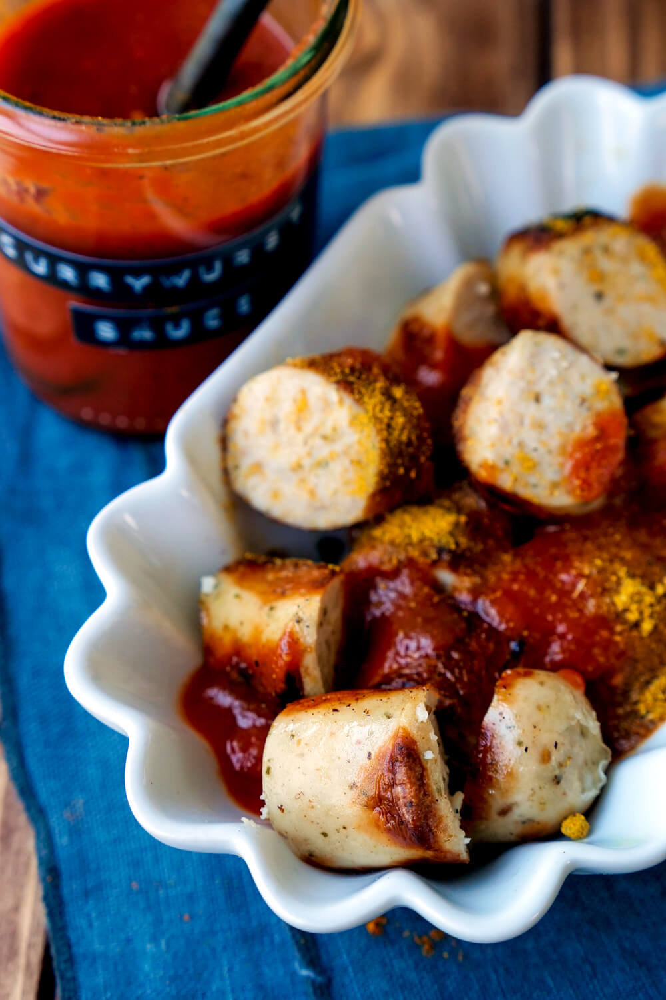

Currywurst
">
How to make a good Currywurst
Wenn wir zuhause Currywurst selber machen, dann ist die Freude immer groß. Das Fastford-Gericht steht neben Burger und Pizza einfach ganz weit oben auf unserer Beliebtheitsskala. Kein Wunder, die fruchtig-würzige Currywurst-Soße ist auch einfach unglaublich lecker. Das 15-Minuten-Rezept und meine Tipps für die perfekte Currywurst hab ich dir heute mitgebracht.
Meine Currywurst-Soße ist absolut familien- und kindertauglich, weil sie ohne Ketchup und Cola auskommt. Ich verwende zum Süßen ein bisschen Honig. Den kannst du aber auch durch braunen Zucker ersetzen.
Ingredients
- Passiere Tomate
- Tomatenmark
- Honig
- Balsamico
- Gemüsebrühe
- Worcestersauce
- Curry
- Paprikapulver
- Tabasco
Steps
- Die Currywurst-Soße aus Tomaten, Worcestersauce und Curry wurde vor ca. 50 Jahren in einem Imbiss in Berlin erfunden.
- Seitdem gehört sie zum beliebtesten Fastfood. Ob im Fußballstadion, auf dem Weihnachtsmarkt oder direkt vom Imbiss, Currywurst ist einfach Kult!
- ür meine einfache Currywurst-Soße die passierten Tomaten zusammen mit Tomatenmark, Honig, Balsamico, Gemüsebrühe, Worcestersauce und den Gewürzen in einen kleinen Topf geben.
- Bei geringer Hitze für 10 Minuten erwärmen. Dann die Currywurst-Soße mit Tabasco abschmecken.